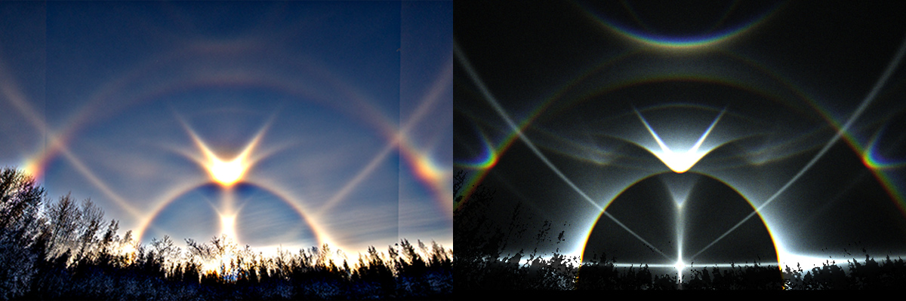
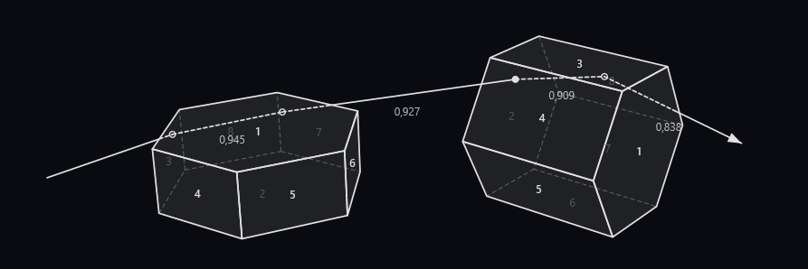

On 25 November Sami Härmä photographed an impressive display in the Naapurivaara village of Sotkamo, Finland, and in the photos he published in Taivaanvahti people thought of seeing fuzzy spots reminiscent of the Borlänge parhelion-tangent arcs. Single photos didn't respond well to enhancing, so it was good there were some with similar enough composition and taken with sufficient time between them to do stacks. These stacks seem indeed to confirm the presence of the parhelion-tangent arcs.
And there may be more. In the stacks both Wegener arc and uppervex Hastings arc materialized, and in addition to having the parhelion-tangent arc enhancements in the expected location on Wegener arc, it looks like the Hastings might have its own enhancements, too: a parhelion-Parry arc. This would be a novel halo, though in the light of this new wisdom, one might see it now also in the Borlänge display on the right side.
If we consider the prospects of parhelion-Parry arc purely from the perspective of sun elevation, then the Sotkamo display comes out more favourably. That's because the lower sun elevation of 4.5 degrees in Sotkamo gives, all else being equal, a brighter Parry than the 6.0 degrees for those Magnus Edbäck photos of the Borlänge display in the link above.
The display occurred 6 km from the slopes. Härmä tells the temperature was around -7 C, right in the -5 to -10 C range where the most massive snow gun displays are forged. The fact that it was cloudy before the display appeared and that it was soon finished by clouds taking over again, tells this was a punch hole cloud display – particles from snow gunning turning a small area of low hanging stratus into ice crystals.
The analysis and text by Marko Riikonen. See the full story here.
In the image below, the enhanced two-frame composition photograph on the left and the simulation of the right. Notice the brightnenings on Wegener and Hastings arcs -- these are the multiple scattering features, namely the upper tangent arc and Parry arc of parhelion. Notable mentions in the Sotkamo display are of course the uppervex Hastings that is a great catch in a solar display, the third one on record, and the outstanding Ounasvaara arc (see the photos in Taivaanvahti), which is likewise the third known solar case.

The raypath responsible for the Parry arc of a parhelion. The distance between the two crystals is short only for illustration purposes.
